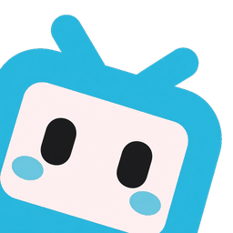

多服务器
集群未启用或暂无节点心跳
通过 Web 界面完成初始配置，无需使用命令行
使用 Bilibili APP 扫描下方二维码登录

直播与预告填写 Holodex API Key，或在设置中填写 YouTube Data API Key，即可显示直播列表
单机可用，默认端口 23234。
登录后显示 Holodex 收藏夹直播（含 Twitch 外部配信）。未登录时使用 channels.json 频道列表，可在「配置管理」中编辑。
https://holodex.netHOLODEX_JWT，复制其 Value（值）并粘贴到上方JWT 将在到期前 30 天内自动续期并写回 config.json。
本次开播需要身份验证
请使用 Bilibili APP 扫描下方二维码完成人脸认证